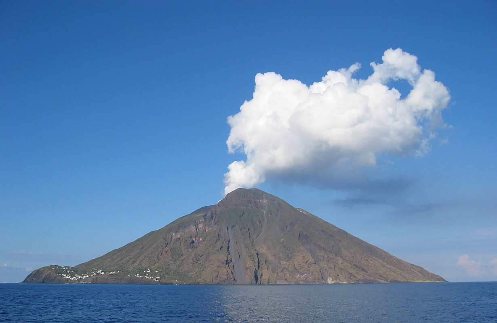

Abstract: Persistently degassing volcanoes erupt small amounts of lava while emitting copious amounts of volatiles and thermal energy, which indicates that the majority of magma must be recycled back to depth through the conduit after degassing, leading to a bidirectional flow field (Francis et al., 1993). To understand the flow regime in those volcanic conduit, I use numerical models for multi-phase flow to set up a virtual laboratory, which is able to extend from the limit of lab experiments in scale, complexity and controls on boundary conditions (Stevenson and Blake, 1998; Whicher, 2008; Becket et al., 2011). My work focuses on how the volatile bubbles in magma affects the stability of flow regime and the composition of magma (e.g., volatile concentration of melt inclusions).
